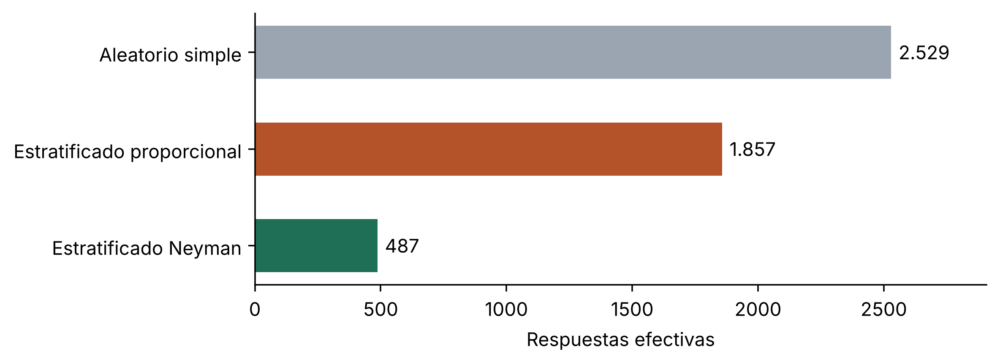
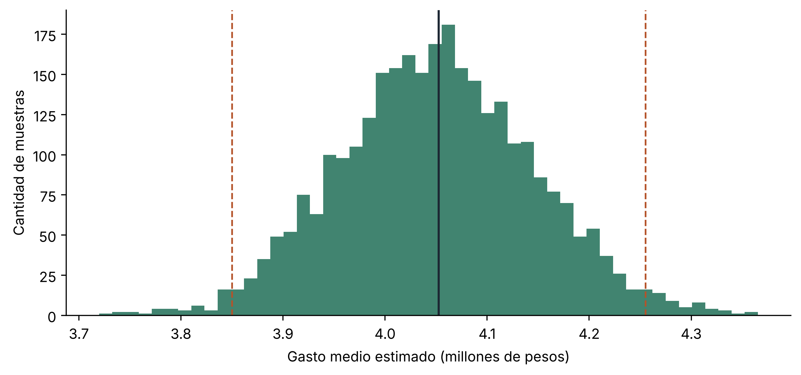

Diseño muestral estratificado para una encuesta a clientes de un distribuidor mayorista
Diseño muestral
Encuestas
Python
Cálculo del tamaño de muestra con información auxiliar, asignación óptima de Neyman y verificación por simulación: la misma precisión con una fracción de las encuestas.
Fecha de publicación
20 de octubre de 2026
La pregunta del cliente
Un distribuidor mayorista con 4.000 clientes activos quiere estimar cuánto prevén gastar sus clientes en la próxima temporada, con el fin de planificar compras y stock. Encuestar a todos resulta caro y lento. La pregunta concreta es doble: cuántos clientes encuestar para que el error sea aceptable y cómo repartir esa muestra entre comercios pequeños, medianos y grandes.
Los datos de este caso son simulados, pero reproducen un rasgo típico de las carteras comerciales: unos pocos clientes grandes concentran buena parte de las compras y presentan, además, la mayor dispersión. El distribuidor cuenta con un activo valioso que a menudo se desaprovecha: su sistema de ventas registra cuánto compró cada cliente el año anterior, y esa información sirve para planificar la muestra.
Ver código
import numpy as npimport pandas as pdimport matplotlib.pyplot as pltrng = np.random.default_rng(2026)# Marco muestral: cartera de clientes clasificada por tamañoestratos = pd.DataFrame({"estrato": ["Pequeños", "Medianos", "Grandes"],"N_h": [2800, 900, 300],"mediana_gasto": [1.2, 4.5, 18.0], # millones de pesos"dispersion": [0.55, 0.60, 0.70], # sigma del logaritmo})poblacion = pd.concat([ pd.DataFrame({"estrato": r.estrato,"gasto": rng.lognormal(np.log(r.mediana_gasto), r.dispersion, r.N_h), })for r in estratos.itertuples()], ignore_index=True)# El marco incluye las compras del año anterior de cada cliente, muy correlacionadas con el gasto previstopoblacion["compras_previas"] = poblacion.gasto * rng.lognormal(0, 0.25, len(poblacion))N =len(poblacion)resumen = (poblacion.groupby("estrato", sort=False)["gasto"] .agg(N_h="size", media="mean", desvio="std", total="sum") .assign(participacion_en_gasto=lambda d: d.total / d.total.sum()))resumen.round(2)
N_h
media
desvio
total
participacion_en_gasto
estrato
Pequeños
2800
1.37
0.81
3834.41
0.24
Medianos
900
5.43
3.40
4890.87
0.30
Grandes
300
24.95
23.13
7484.52
0.46
El cuadro muestra el problema: los clientes grandes son apenas el 7,5 % de la cartera, pero explican una porción del gasto muy superior y concentran la variabilidad.
Paso 1. Cuántas respuestas hacen falta según cómo se diseñe la muestra
Se fija como meta un error relativo máximo del 5 % sobre el gasto medio, con un 95 % de confianza; es decir, que la estimación no se aparte en más de un 5 % del valor verdadero en 19 de cada 20 muestras. Las varianzas de planificación se toman de las compras del año anterior, disponibles para todos los clientes del marco.
Con \(V_0 = \left(e_r\,\bar Y / z\right)^2\) como varianza máxima admisible, los tamaños necesarios para cada diseño son
donde \(W_h = N_h/N\) es el peso de cada estrato y \(S_h\) su desvío estándar. La asignación proporcional reparte la muestra según el tamaño de cada estrato; la de Neyman la reparte según tamaño y dispersión, \(n_h = n\,N_h S_h / \sum_k N_k S_k\).
fig, ax = plt.subplots(figsize=(7.5, 2.8))colores = ["#9aa5b1", "#b4532a", "#1f6f57"]barras = ax.barh(n_requerido.index[::-1], n_requerido.values[::-1], color=colores[::-1], height=0.55)ax.bar_label(barras, labels=[f"{v:,}".replace(",", ".") for v in n_requerido.values[::-1]], padding=4)ax.set_xlabel("Respuestas efectivas")ax.set_xlim(0, n_requerido.max() *1.15)ax.spines[["top", "right"]].set_visible(False)plt.tight_layout()plt.show()

Figura 1: Respuestas efectivas necesarias para un error relativo del 5 % con 95 % de confianza, según el diseño muestral.
El resultado cambia por completo la conversación con el cliente. Un muestreo aleatorio simple exigiría encuestar a más de la mitad de la cartera, lo que en la práctica equivale a un censo. Estratificar por tamaño sin más ayuda poco, porque la asignación proporcional sigue destinando la mayoría de las encuestas a los comercios pequeños, donde casi no hay variabilidad. La asignación de Neyman obtiene la misma precisión con una fracción de las respuestas.
La asignación invierte la intuición habitual: los clientes grandes, apenas el 7,5 % de la cartera, reciben la mitad de la muestra, y con una tasa de respuesta del 70 % conviene directamente contactarlos a todos. En la jerga del muestreo se trata de un estrato de inclusión forzosa. Los factores de expansión resultantes permiten llevar los resultados al total de la cartera.
Paso 3. Verificación por simulación
Las fórmulas se apoyaron en las compras del año anterior y no en el gasto previsto, que es lo que se quiere medir. Para comprobar que el diseño cumple su promesa, se extraen 3.000 muestras con la asignación de Neyman y se mide el error efectivamente obtenido sobre la variable de interés.
Ver código
grupos = {e: g.gasto.to_numpy() for e, g in poblacion.groupby("estrato", sort=False)}media_real = poblacion.gasto.mean()estimaciones = np.array([sum(plan.W_h[e] * rng.choice(grupos[e], plan.n_h[e], replace=False).mean() for e in grupos)for _ inrange(3000)])dentro_banda = np.mean(np.abs(estimaciones / media_real -1) <= error_relativo)fig, ax = plt.subplots(figsize=(8, 3.8))ax.hist(estimaciones, bins=50, color="#1f6f57", alpha=0.85)ax.axvline(media_real, color="#1c2733", linewidth=1.5)for k in (0.95, 1.05): ax.axvline(media_real * k, color="#b4532a", linestyle="--", linewidth=1.2)ax.set_xlabel("Gasto medio estimado (millones de pesos)")ax.set_ylabel("Cantidad de muestras")ax.spines[["top", "right"]].set_visible(False)plt.tight_layout()plt.show()

Figura 2: Distribución del gasto medio estimado en 3.000 muestras con asignación de Neyman. La línea continua marca el valor verdadero y las punteadas, la banda de ±5 %.
El 96,7 % de las muestras simuladas queda dentro de la banda de ±5 % alrededor del valor verdadero, algo por encima del 95 % buscado: las compras pasadas son un poco más dispersas que el gasto previsto, de modo que el cálculo resultó levemente conservador. Si el gasto previsto resultara menos parecido a las compras pasadas de lo supuesto, la precisión se degradaría, y por eso la memoria metodológica deja asentado ese supuesto junto con un margen de seguridad recomendado.
Qué recibe el cliente
El tamaño de muestra justificado y el número de clientes a contactar, con el margen de error que puede garantizarse.
La asignación por estrato y el listado de clientes seleccionados, con un plan de reemplazos para la no respuesta.
Los factores de expansión para estimar totales y promedios, y una memoria metodológica que documenta cada decisión.
La lección práctica es sencilla: cuando la población es heterogénea, decidir a quién encuestar determina cuántas encuestas hacen falta.